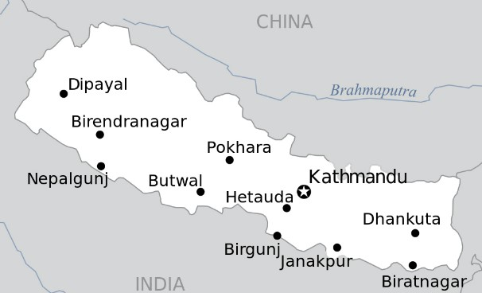
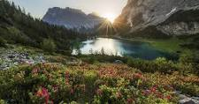

|  |  | |
Open positions and internships |
Where we work |
Career with our affiliates |
We are commited to connecting people with nature,and we inspire Americans to protect wildlife of our childrens future. |
The AC studios is on the gound in seven regional centers along nepal working along side various clients |
Our 52 affiliate partners are leaders on state and local conservation efforts |
At AS studio we strive to give our employees the kinds of benefits they need to support their work and home lives. The National Wildlife Federation offers a flexible benefits package to allow choice among a variety of options to customize a benefits package based on individual employee/family needs.Our benefits go well beyond the traditional. Take our parties, for example—where we get silly with photo booths—or games like corn hole and table tennis. Or join in for our annual chili cook-off, or our “Bike to Work Day” ice cream party, or maybe even a wildlife scavenger hunt or nature walk. We even have a massage therapist! These examples are ways we strive to make our workplace comfortable, fun, and one that builds a sense of community and inclusivity.
In addition to our 48-week Fellowship program,AS studio offers an internship program for students who are currently in high school or are pursuing an undergraduate college degree. These paid internships offer structured work experiences to students, with a number of perks, including relevant and professional work experience, skill development, professional connections, resume enhancements, and an opportunity to assess their own interests and skills. Internships with the National Wildlife Federation can be any length, and may include summer assignments or opportunities throughout the school year. Although an internship with the National Wildlife Federation does not offer benefits, we guarantee our interns will have a great learning experience.